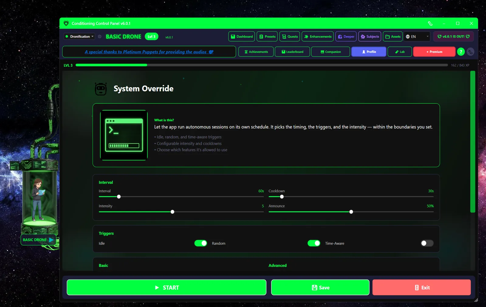

Overview
Every other feature in CCP waits for you. Takeover Mode doesn't. Once you arm it, your companion runs her own timer, picks an effect from the list you allowed, and fires it - a flash, a video, a subliminal, a bubble game, or just a comment. She becomes a participant instead of a tool.
The app calls it Takeover. Internally it's "Autonomy Mode", so you'll see both names in tooltips, logs and older posts. Same thing.
Random Triggers
Acts on her own clock
Idle Detection
Notices when you wander off
Time-Aware
Gentler by day, bolder at night
Announcements
Warns you first (sometimes)
⚠️ You have to say yes first
The first time you switch Takeover on, the app shows a consent dialog listing what she'll be allowed to do. Nothing runs until you accept it. After that you can stop her any time with the Stop button, the Takeover toggle, or the panic key - the panic key also clears whatever is currently on screen.
It never turns itself back on
Takeover always starts off when you launch the app, even if it was running when you closed it. If you actually want it to arm itself on launch, there's an opt-in "resume on startup" setting. It's off by default.
One exception: Lockdown
If Lockdown Mode is active and Takeover is already running, you can't stop Takeover until the lockdown timer expires. That is the point of Lockdown. Don't stack the two unless you mean it.
Requirements
- Patreon subscription - Takeover is a premium feature and won't start without active Patreon access.
- Consent - accept the dialog the first time you enable it. Your answer is remembered.
- Turn it on, then press Start - the toggle enables the feature; the green Start button actually arms her. Nothing fires until you press it.
💡 Pairs well with Perfect Fuckpuppet
The Perfect Fuckpuppet companion (unlocks at Level 100) earns 50% extra companion XP every time Takeover fires an action. Built for exactly this play style.
How It Works
What sets her off
| Trigger | Description |
|---|---|
| Random | A timer built around your Interval setting, with roughly a third of jitter either way so the beat isn't predictable. On by default. |
| Idle | Fires after you've left the mouse and keyboard alone for your Idle Timeout. On by default. |
| Context | Reacts to what you're doing, based on the window you have focused. Needs Window Awareness switched on. Off by default. |
What happens on a trigger
- The timer fires.
- She checks whether it's a good moment. She'll stand down if the cooldown hasn't elapsed, if a video or lock card is already on screen, or if you're watching something in your browser.
- She picks an action, weighted by what you've allowed, her current mood, and your Intensity setting.
- She may announce it first - a teasing line in the speech bubble plus a banner naming the effect, then a two-second pause.
- The effect fires.
- Cooldown starts. Nothing else can happen until it's done.
She stands off other things
Takeover deliberately waits its turn. It won't interrupt a fullscreen video, a lock card, or a bubble-count game, and it won't stack a video on top of one you started in your browser. If the moment is busy, it reschedules a short retry instead of skipping the whole interval.
Available Actions
Every action has its own on/off switch. Untick anything you don't want her reaching for.
| Action | Default | Description |
|---|---|---|
| Flash Image | On | A one-shot flash from your image pool, using your normal flash settings. |
| Mandatory Video | On | Plays a video from your pool. It is an ordinary mandatory video and follows your global Strict Lock setting, so if you have Strict Lock off it stays skippable. |
| Subliminal | On | Flashes a subliminal message from your subliminal pool. |
| Comment | On | She just says something. Uses AI if the companion has it, otherwise a canned line. No banner, no interruption. |
| Pink Filter Pulse | On | Turns the pink screen filter up for 30 seconds, then puts it back. If you move the slider mid-pulse, it respects your change. |
| Bouncing Text | On | Drifting text overlay for 30 seconds. |
| Mind Wipe | On | The Mind Wipe effect. The heaviest thing on this list. |
| Lock Card | On | Shows a lock card you have to type through before you get control back. |
| Start Bubbles | Off | Starts the bubble-popping minigame for 30 seconds. |
| Web Video | Off | Opens a random HypnoTube video fullscreen in the browser. Skipped if any other video is already playing. |
| Wallpaper | Off | Swaps your desktop wallpaper for one from a folder you pick, then restores the original. The original is remembered on disk, so a crash won't leave your desktop stuck. |
| Spoken Mantra | On, but self-gating | She says a mantra out loud and listens for you to repeat it. Only ever offered if you've given microphone consent, the offline speech model is installed, and you aren't already driving the mic with wake-word or push-to-talk. |
The microphone is a separate yes
Takeover consent does not cover the mic. Anything that listens - spoken mantras, "Hey Bambi", push-to-talk - needs its own microphone consent dialog, and the mic never opens until you've given it. Those voice features live under the She's Listening exclusive and work whether or not Takeover is running.
Removed from the rotation
Brain Drain, Spiral and Bubble Count used to be on this list and are no longer picked automatically - they were too disruptive or too unfinished to hand over. Their toggles still exist in older settings files but Takeover ignores them.
Mood System
The clock nudges what she reaches for. Mood doesn't unlock or block anything, it just shifts the odds.
| Time | Mood | What shifts |
|---|---|---|
| 6 AM - 12 PM | Gentle | Comments more likely, videos half as likely |
| 12 PM - 6 PM | Attentive | No adjustment, straight weights |
| 6 PM - 10 PM | Playful | More bubbles, more flashes |
| 10 PM - 6 AM | Mischievous | More videos, more subliminals |
💡 Time-Aware
Mood always affects what she picks. Switch on Time-Aware and it also affects how often she acts, using a per-slot multiplier - quieter in the morning, busier at night. Off by default.
Settings

Core Settings
| Setting | Default | Description |
|---|---|---|
| Takeover | Off | The master switch. Off on every launch unless you opt into resume-on-startup. |
| Interval | 60s (30-300s) | Average gap between random attempts. The real gap jitters around this by about a third either way. |
| Idle / idle timeout | On, 5 min (1-30) | How long you have to be away from the keyboard before the idle trigger fires. |
| Cooldown | 30s (10-300s) | Hard floor between two actions. Raise it if she feels relentless. |
| Intensity | 5 (1-10) | 1 is subtle nudges, 10 is relentless. Mostly weights the more disruptive actions up or down. |
| Announce | 50% (0-100) | Chance she warns you before acting. At 0% she works silently and the on-screen banner is suppressed too. |
| Time-Aware | Off | Let the time of day change how often she acts, not just what she picks. |
| Context trigger | Off | React to the app or window you have in focus. Requires Window Awareness. |
| Countdown bar | On | The thin pink bar under the avatar that drains toward her next random action. |
| Resume on startup | Off | Arm Takeover automatically when the app launches. Leave it off unless you're sure. |
Action Toggles
Every action in the list above has its own switch. Start by turning off anything you'd hate to be surprised by, then loosen up as you get a feel for the pacing.
Perfect Fuckpuppet Companion
The Perfect Fuckpuppet companion unlocks at Level 100 and is built around this feature:
+50% XP Bonus
Whenever Takeover fires an action
Passive Play
Rewards hands-off conditioning
Every other companion rewards something you do. This one rewards getting out of the way: with Perfect Fuckpuppet selected and Takeover running, each autonomous action earns 50% more companion XP. She literally levels faster the less you touch the app.